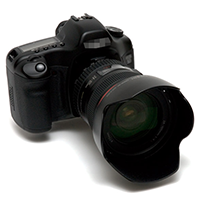
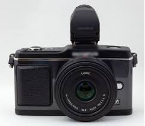
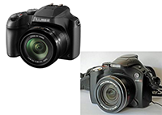
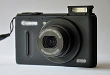
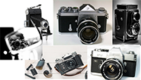

Par Antoine Espine
|
L'appareil reflex : |
Un appareil photographique reflex numérique est un appareil photographique numérique de type "reflex mono-objectif" (l'objectif sert à la fois à la visée et à la prise de vue). Les reflex utilisent des capteurs numériques de grande taille (format 4/3, APS-C, APS-H, plein format et moyen format). Ce système de visée permet de changer d'objectif. |
|  | |
|
Un appareil photographique hybride (ou mirrorless: « sans miroir » en français) est un appareil muni d'un capteur numérique de grande taille (moyen format, 24×36 et APS-C), de moyenne taille (4/3 et 1 pouces) ou de petite taille (1/2,3 pouces et 1/1,7 pouces). La visée est électronique et l'appareil peut également recevoir divers objectifs interchangeables. |
L'appareil hybride : |
|  | |
|
L'appareil bridge: |
Un bridge est un appareil photographique numérique doté de fonctions avancées (modes manuels, gestion du format RAW par exemple tout comme les reflex et hybrides), d'un objectif puissant et polyvalent non interchangeable et d'un viseur électronique.
Le nom vient de l'anglais « bridge » qui signifie « pont » en français, car les bridges sont en quelque sorte la jonction entre les appareils photographiques numériques compacts et les appareils photographiques numériques reflex, catégories d'appareils entre lesquelles ils se situent à la fois en matière de performance, d'encombrement et de prix.
Un bridge dispose donc d'un viseur électronique (comme les hybrides), ce qui constitue la principale différence avec un appareil reflex. |
|  | |
|
Un appareil photographique compact est un appareil photographique de petite taille et léger, le plus souvent totalement automatisé, et dont la visée se fait généralement sur un écran à cristaux liquides.
Il convient pour prendre des photos en extérieur, avec une prise de vue en lumière naturelle. Il offre l’avantage d’être simple à utiliser.
Les modèles destinés au grand public disposent de modes intelligents performants, adaptés aux personnes souhaitant un appareil simple sans se soucier de l'aspect technique de la prise de vue (ouverture, temps de pose, sensibilité). |
L'appareil compact: |
|  | |
|
L'appareil argentique: |
L'appareil argentique (les plus anciens le connaissent sûrement): Le terme s'est répandu au début des années 2000 pour différencier la photographique "classique", sur pellicule, de la photographie "numérique" en plein essor à l'époque. |
|  |